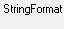
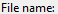
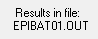
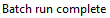

import sys import datetime import os import inspect script_dir = os.path.dirname(os.path.abspath( inspect.getfile(inspect.currentframe())) ) # import locater script path_array = script_dir.split(os.sep) del path_array[-1] base_script_dir = (os.sep).join(path_array) sys.path.insert(0, base_script_dir) from locater import get_locations sys.path.pop(0) locs = get_locations() smiles_location = locs['smiles'] destination_folder = locs['results'] log_file = locs['log'] if log_file: try: log = open(log_file, 'a') log.write("Started Epi Script. Log Loaded\n") except: log = False App.focus("EPI Suite") click() click() wait(Pattern().similar(0.80),10) click(Pattern().similar(0.80).targetOffset(0,-6)) wait(Pattern().targetOffset(70,0), 10) type(Pattern().targetOffset(70,0), smiles_location) click() click() click() wait(Pattern().similar(0.80), 3600) click() wait(, 3600) click() wait(, 3600) type(destination_folder + r"\EPI_results.txt") click() if log: log.write("script reached end.\n\n") log.close()